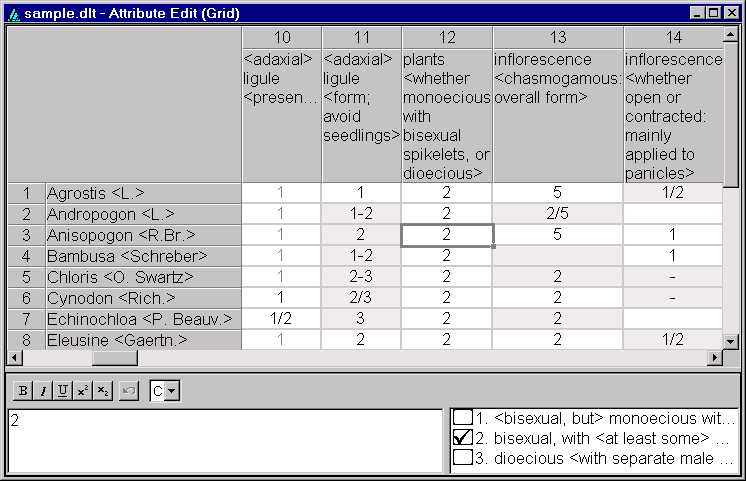

This view is similar to that of a spreadsheet program. Here is an example.

The upper pane of this view is a grid displaying the data matrix. The columns represent the characters of the data set and the rows represent the items. The cells of the matrix display the attribute corresponding to a given character (column) and item (row). For non-text characters, any comments are removed from the attribute before display. This allows more of the 'basic' data to be displayed. When an attribute appears in grey text (as for many of the entries in the column for character 10 in the example), it indicates that the state shown is present implicitly, rather than by explicit encoding. A grey background, as for character 11 of most taxa in the example, indicates that the attribute is 'complex' (see definition above) and can be edited or entered only in the complex-attribute editing pane. A focus rectangle indicates the currently selected attribute of the grid. Elements of the pane may be resized by dragging their boundaries in the column or row headings (the grey areas at the left and top).
Characters and items may be re-ordered by dragging a feature name or taxon name (that is, the grid's column or row headings, respectively) to the desired position. Dragging with the right mouse button either moves or copies the item (for rows) or character (for columns) – a popup menu offers the choice 'Move here' or 'Copy here'. Clicking the right mouse button opens a popup menu with options for inserting, modifying or deleting items or characters. Double-clicking (with the left mouse button) on a character name will open the character editor dialog. Double-clicking on an item name will open the item editor dialog.
To copy cells to the clipboard, select the cells you want, and choose 'Edit > Copy' from the main menu. Note that the keyboard shortcut is 'Ctrl+Ins', not the standard Windows 'Ctrl+C'. The 'Paste' option has not been implemented, but the clipboard can be pasted into other programs such as Excel or Word. When pasting into Excel, start a new sheet, select the whole sheet, and format the cells as text (otherwise DELTA codes containing a slash will be interpreted as dates). Select the top left cell, and paste.
There are 'Print', 'Print Preview', and 'Print Setup' options in the 'File' menu (in grid view only). If you want more control over the layout, you can copy part of the grid and paste it into a word processor or spreadsheet. In Word, paste into a table, or paste as text and then use 'Table > Convert > Text to Table'.
The Complex-Attribute Editor (lower-left pane). This pane is a rich edit control – that is, it allows display and editing of formatting marks. It contains the DELTA encoding for the currently selected item and character, using the traditional DELTA style. Angle brackets should appear around comments, but should not be placed around text attributes. A toolbar above the pane provides controls for rendering portions of the text in bold, italics, etc., and for undoing changes. Error checking is performed when the input focus leaves the edit control.
The State List (bottom-right pane). If the currently selected character is a text or numeric character, this pane contains only an icon denoting the character type, and the units of measurement (if applicable). If the currently selected character is a multistate character, it contains a list of the states of the character, with a check box next to each. The appearance and method of use of the check boxes is the same as in the character-tree pane. This pane is provided so that the codings may be viewed and edited when the character is not 'expanded' in the character-tree pane.